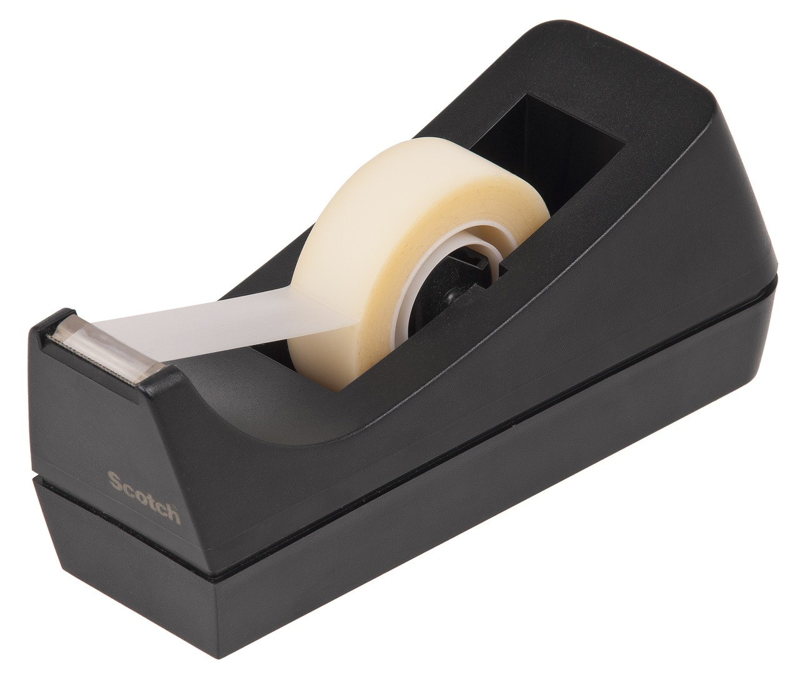
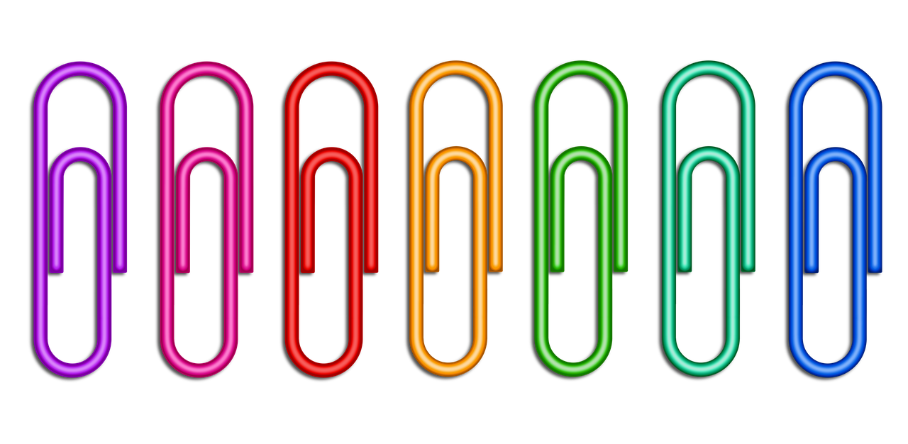
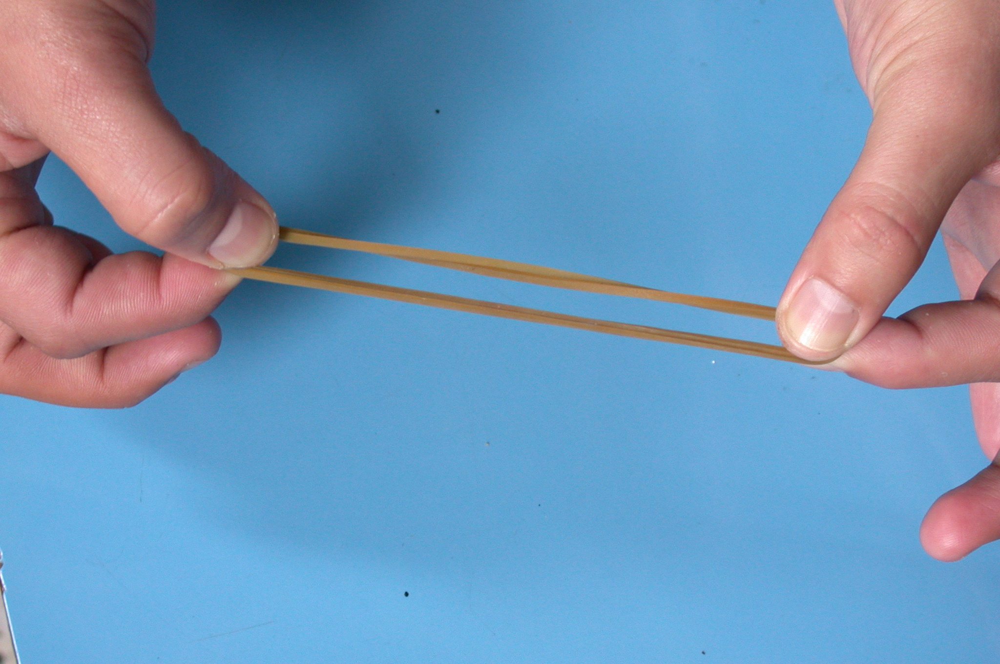
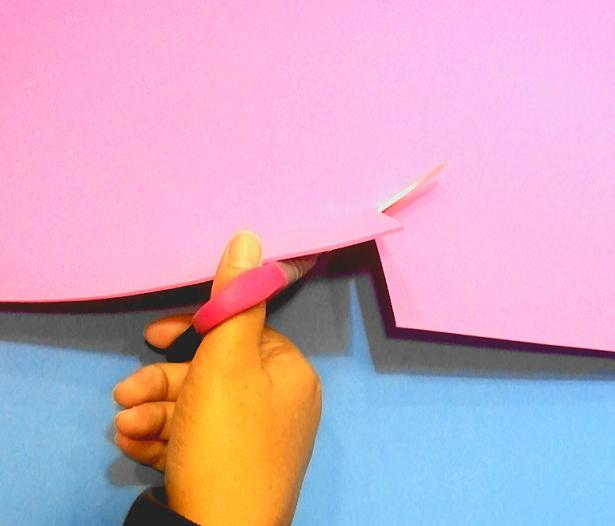
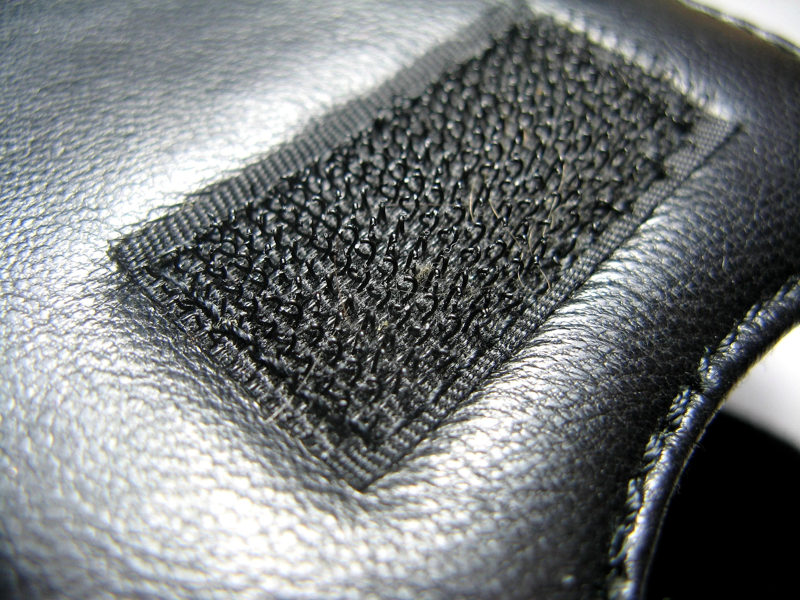

Diccionario
Adhesivo
Definición:
Que se adhiere o se pega.
Ejemplo:
Se necesita un adhesivo fuerte para pegar las zapatillas.
Clip
Definición:
Utensilio hecho con un trozo de alambre, u otro material, doblado sobre sí mismo, que sirve para sujetar papeles.
Ejemplo:
Usa un clip para no desordenar los papeles.
Complemento
 Definición:
Definición:
Accesorio de la indumentaria femenina o masculina.
Ejemplo:
Este bolso lo compré en esa tienda de complementos.
Discurso
Definición:
Exposición de un asunto determinado en voz alta y con detalle delante de muchas personas.
Ejemplo:
El candidato a delegado dio un buen discurso.
Elástico
Definición:
Que se puede estirar y deformar recuperando su forma cuando para la fuerza que la altera.
Ejemplo:
La goma es más elástica que el globo.
Goma eva
Definición:
Es un material plástico, ligero y poroso que tiene una textura espumosa y flexible.
Ejemplo:
Haremos una careta usando goma eva de distintos colores.
Recuento
 Definición:
Definición:
Contar o volver a contar un número de cosas.
Ejemplo:
Hemos recontado el dinero antes de pagar.
Velcro
Definición:
Sistema de cierre o sujeción formado por dos tiras de tejidos diferentes que se enganchan al entrar en contacto.
Ejemplo:
Compraremos unas zapatillas con velcro.
Votación
Definición:
Dar tu apoyo, mediante una papeleta o cualquier otro modo, a una persona, grupo o partido.
Ejemplo:
Para elegir al delegado de la clase realizamos una votación.
 Ya podemos hacer los disfraces, hemos aprendido todo lo necesario, así que… ¡Adelante!
Ya podemos hacer los disfraces, hemos aprendido todo lo necesario, así que… ¡Adelante!